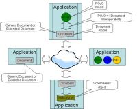

Section Summary: Interoperability between POJO and Document space entries
Overview
GigaSpaces offers interoperability between documents and POJOs via space - it is possible to write POJOs an read them as documents, and vice versa. This is usually useful in scenarios requiring reading and/or manipulating POJO objects without loading the concrete java classes. This page describes how to do it.

In previous releases the ExternalEntry class was used to achieve this functionality. Starting 8.0, the SpaceDocument class should be used to accomplish these needs in a simpler and safer manner, whereas ExternalEntry has been deprecated and should no longer be used.
{kind=link}
Requirements
When working with documents the user is in charge of creating and registering the space type descriptor manually before writing/reading documents. When working with POJOs the system implicitly generates a space type descriptor for the POJO's class using annotations or gs.xml files when the class is used for the first time. In order to inter-operate, the same type descriptor should be used for both POJOs and documents.
If the POJO's class is in the application's classpath, or the POJO is already registered in the space, there's no need to register it again - the application will retrieve it automatically when it's used for the first time. For example:
// Create a document template using the POJO class name: SpaceDocument template = new SpaceDocument(MyPojo.class.getName()); // Count all entries matching the template: int count = gigaSpace.count(template);
If the POJO's class is not available in the classpath or server, the application will throw an exception indicating there's no type descriptor registered for the specified type. In that case, it is possible to manually create a matching type descriptor using the SpaceTypeDescriptorBuilder and register it in the space. However, that's not recommended since it essentially requires you to duplicate all the POJO settings and maintain them if the POJO changes.
Query Result Type
When no interoperability is involved this is a trivial matter - Querying a POJO type returns POJOs, querying a document type returns documents.
When we want to mix and match, we need semantics to determine to query result type - POJO or document.
Template Query
Template query result types are determined by the template class - if the template is an instance of a SpaceDocumnet the result(s) will be document(s), otherwise it will be POJO(s).
SQL Query
The SQLQuery class has been enhanced with a QueryResultType settings which can be set at construction. The following options are available:
- OBJECT - Return java Object(s) (POJO).
- DOCUMENT - Return space document(s).
- NOT_SET - If the type is registered with a concrete java class, return an Object. Otherwise, return a document. This is the default behavior.
This strategy both preserves backwards compatibility and simplifies non-interoperability scenarios, which are more common.
ID Based Query
In order to support ID queries for documents, the IdQuery class has been introduced, which encapsulates the type, id, routing and a QueryResultType. New GigaSpace overload methods have been added to readById, readIfExistsById, takeById, takeIfExistsById. The result type is determined by the QueryResultType, similar to SQLQuery.
Respectively, to support multiple ids queries, IdsQuery was also introduced, with new overloads for readByIds and takeByIds.
The original readById (and related methods) overloads are not suited for document types, since they require a concrete java class. They always return POJO(s).
Dynamic Properties
By default, type descriptors created from POJO classes do not support dynamic properties. If a document of such a type with a property that is not defined in the POJO will be written to the space, an exception will be thrown indicating the property is not defined in the type and the type does not support dynamic properties.
It is possible to manually create a SpaceTypeDescriptor of the POJO using the SpaceTypeDescriptorBuilder and enable dynamic properties. Note, however, that in that case if client A writes a document with a dynamic property and client B reads it as a POJO, the dynamic property will be ignored, and if client B will proceed to update the entry the dynamic property will be deleted from the space.
Local Cache / Local View
Local View and Local Cache supports both POJOs and Documents. Unlike an embedded space, the entry is stored in the cache as a user object (either POJO or document), which speeds up query performance since the result entries do not have to be transformed.
When working with POJOs only or Documents only, this is not an issue. However, when working in a mixed POJO-document environment and querying the cache for documents, reading a POJO will return the reference to the POJO stored in the cache, whereas reading a document will require transforming the POJO to a document before returning the result.
 The above assumes the Local Cache / Local View running in default Object Reference Storage Mode. If shallowCopy is configured this is irrelevant.
The above assumes the Local Cache / Local View running in default Object Reference Storage Mode. If shallowCopy is configured this is irrelevant.
Space Filters and Space Replication Filters
Space Filters are supported for space documents. If the space type descriptor that is registered in the space contains the POJO class, the entry will be passed to the filter as a POJO. Otherwise, it will be passed to the filter as a document.